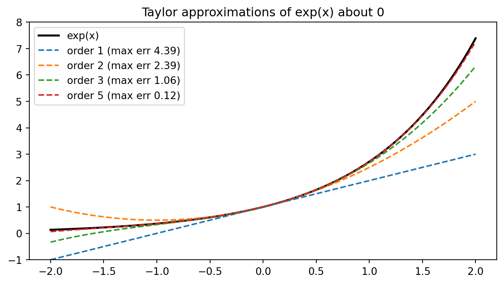

Calculus is the mathematics of change, and machine learning is, at its computational core, an exercise in controlled change. Every time a neural network adjusts its weights, every time a regression model tightens its fit to data, the engine driving that adjustment is the derivative. To understand why gradient descent works, why backpropagation is possible, and why some loss surfaces are easy to optimize while others are treacherous, you need a firm grasp of limits and derivatives. This chapter builds that foundation from the ground up, beginning with the concept of a limit and ending with the role derivatives play in the optimization routines that power modern AI.
26.1 1. Limits and Continuity
26.1.1 1.1 The Intuition of a Limit
A limit captures the value that a function approaches as its input approaches some target, even when the function is not defined exactly at that target. Consider the function \(f(x) = \frac{x^2 - 1}{x - 1}\). At \(x = 1\) the expression is \(\frac{0}{0}\), which is undefined. Yet for every \(x \neq 1\) we can factor the numerator as \((x-1)(x+1)\) and cancel, giving \(f(x) = x + 1\). As \(x\) moves closer and closer to \(1\), the output moves closer and closer to \(2\). We write this as
\[\lim_{x \to 1} \frac{x^2 - 1}{x - 1} = 2.\]
The limit describes behavior in the neighborhood of a point rather than at the point itself. This distinction matters enormously in machine learning, where we often care about how a loss function behaves near a minimum rather than its exact value at a single configuration.
26.1.2 1.2 The Formal Definition
The intuitive notion of approaching becomes precise through the epsilon delta definition. We say that \(\lim_{x \to a} f(x) = L\) if
In plain language, no matter how tight a tolerance \(\varepsilon\) you demand around the output value \(L\), you can always find a small enough window \(\delta\) around the input \(a\) that keeps the function inside that tolerance. This definition gives calculus its rigor and lets us reason about infinite processes using finite logic.
As a concrete example, let us prove that \(\lim_{x \to 3} (2x + 1) = 7\). Fix any \(\varepsilon > 0\). We need \(|(2x + 1) - 7| < \varepsilon\), that is \(|2x - 6| = 2|x - 3| < \varepsilon\), which holds exactly when \(|x - 3| < \varepsilon / 2\). So choose \(\delta = \varepsilon / 2\). Then \(0 < |x - 3| < \delta\) gives \(|(2x + 1) - 7| = 2|x - 3| < 2\delta = \varepsilon\), as required. The choice of \(\delta\) in terms of \(\varepsilon\) is the heart of every such proof, and the same backward-from-the-tolerance reasoning underlies convergence guarantees for optimization algorithms.
26.1.3 1.3 Continuity
A function \(f\) is continuous at a point \(a\) when three conditions hold: \(f(a)\) is defined, the limit \(\lim_{x \to a} f(x)\) exists, and the two agree, so that
\[\lim_{x \to a} f(x) = f(a).\]
Intuitively, a continuous function has no holes, jumps, or breaks. You can trace its graph without lifting your pen. Continuity is the gateway to differentiability, and it carries practical weight in machine learning. Many loss functions are designed to be continuous so that small changes in parameters produce small changes in loss, which makes iterative optimization stable. The rectified linear unit, \(\text{ReLU}(x) = \max(0, x)\), is continuous everywhere even though it has a sharp corner at the origin. That corner foreshadows a subtlety we will return to: continuity does not guarantee that a derivative exists.
26.1.4 1.4 One-Sided Limits and Discontinuities
Sometimes a function approaches different values depending on the direction of approach. The left-hand limit \(\lim_{x \to a^-} f(x)\) and the right-hand limit \(\lim_{x \to a^+} f(x)\) may disagree, in which case the two-sided limit does not exist. The step function used in early perceptron models, which outputs \(0\) for negative inputs and \(1\) for nonnegative ones, has exactly this kind of jump discontinuity at the origin. Its left limit is \(0\) and its right limit is \(1\). This discontinuity is precisely why the perceptron could not be trained with gradient-based methods and why smooth activations such as the sigmoid replaced it. The lesson is that the analytic properties of a function determine which optimization tools are available.
26.2 2. The Derivative as Rate of Change
26.2.1 2.1 Average and Instantaneous Rates
The derivative measures how fast a function changes. Begin with the average rate of change of \(f\) over an interval from \(x\) to \(x + h\), which is the slope of the secant line connecting the two points:
\[\frac{f(x + h) - f(x)}{h}.\]
As we shrink the interval by letting \(h\) approach zero, the secant line pivots toward the tangent line, and the average rate of change becomes the instantaneous rate of change. This limiting slope is the derivative:
When the limit exists, we say \(f\) is differentiable at \(x\). The derivative is itself a function, assigning to each input the slope of the tangent there.
The algebra cancels the problematic \(h\) in the denominator before the limit is taken, leaving a clean result. This pattern, simplify first and then take the limit, recurs throughout differential calculus.
26.2.3 2.3 Differentiability Implies Continuity
If a function is differentiable at a point, it must be continuous there. The converse fails. The absolute value function \(f(x) = |x|\) is continuous at \(0\) but not differentiable there, because the slope approaching from the left is \(-1\) while the slope approaching from the right is \(+1\). The two one-sided derivatives disagree, so no single tangent slope exists. This is exactly the situation at the kink of a ReLU. In practice, frameworks assign a subgradient value at such points, typically \(0\) or \(1\), so that optimization can proceed despite the missing classical derivative. Understanding this gap between continuity and differentiability explains many engineering choices in deep learning libraries.
26.3 3. The Derivative as Linear Approximation
26.3.1 3.1 The Tangent Line as a Local Model
A second and equally important interpretation views the derivative as the best linear approximation to a function near a point. Near \(x = a\), the function is well approximated by its tangent line:
\[f(x) \approx f(a) + f'(a)(x - a).\]
This is the first-order Taylor approximation. The quality of the approximation improves as \(x\) approaches \(a\), and the error shrinks faster than \(|x - a|\) itself. To see why this follows directly from the definition of the derivative, define the remainder as
So \(r(\Delta x) = o(\Delta x)\), meaning the remainder vanishes faster than the step itself. We may therefore write \(f(a + \Delta x) = f(a) + f'(a)\,\Delta x + o(\Delta x)\), which is precisely the statement that the tangent line is the best linear approximation: among all lines through \((a, f(a))\), only the one with slope \(f'(a)\) has an error that is asymptotically negligible compared to \(\Delta x\).
26.3.2 3.2 Why Linearization Drives Optimization
This linear-approximation view is the conceptual heart of gradient-based learning. Optimization algorithms cannot see the entire loss surface; they only have local information at the current parameter values. By treating the loss as approximately linear in a small neighborhood, an algorithm can predict which direction reduces the loss and take a step that way. If the loss \(L\) has derivative \(L'(\theta)\) at the current parameter \(\theta\), then moving in the direction opposite the derivative,
decreases the loss for a sufficiently small step size \(\eta\). The linear model justifies the step, and the step size \(\eta\), called the learning rate, controls how far we trust that local model before recomputing.
26.3.3 3.3 The Differential and Sensitivity Analysis
The differential \(df = f'(x)\,dx\) formalizes how a small input change \(dx\) propagates to an output change \(df\). In machine learning this is the language of sensitivity. When we ask how much a tiny perturbation of one weight affects the final loss, we are computing a differential. Backpropagation is, at its core, an organized accumulation of such differentials across the layers of a network, multiplying local linear approximations together to relate input changes to output changes.
26.4 4. Differentiation Rules
Computing derivatives from first principles every time would be impractical. A small set of rules lets us differentiate complicated expressions mechanically.
26.4.1 4.1 The Basic Rules
The power rule states that for \(f(x) = x^n\), the derivative is \(f'(x) = n x^{n-1}\). Constants pull out of derivatives, so \(\frac{d}{dx}[c\,f(x)] = c\,f'(x)\), and derivatives distribute over sums, so \(\frac{d}{dx}[f + g] = f' + g'\). The derivative of a constant is zero, since a constant function does not change. These rules alone handle every polynomial.
26.4.2 4.2 Product and Quotient Rules
For products, \(\frac{d}{dx}[f(x)g(x)] = f'(x)g(x) + f(x)g'(x)\). We can prove this from the definition by adding and subtracting a clever intermediate term. Writing the difference quotient and inserting \(-f(x+h)g(x) + f(x+h)g(x)\) in the numerator,
As \(h \to 0\), continuity of \(f\) gives \(f(x+h) \to f(x)\), the first quotient tends to \(g'(x)\), and the second tends to \(f'(x)\), yielding \(f(x)g'(x) + g(x)f'(x)\).
This follows from the product and chain rules: write the quotient as \(f(x)\,g(x)^{-1}\), so that \(\frac{d}{dx}[f g^{-1}] = f' g^{-1} + f \cdot (-g^{-2} g') = \frac{f'}{g} - \frac{f g'}{g^2}\), which combines over the common denominator \(g^2\) into the stated form. The quotient rule appears, for instance, when differentiating the softmax function used in classification, where each output is a ratio of an exponential to a sum of exponentials.
26.4.3 4.3 The Chain Rule
The chain rule is the single most important differentiation rule for machine learning. For a composition \(f(g(x))\),
\[\frac{d}{dx} f(g(x)) = f'(g(x)) \cdot g'(x).\]
A clean proof uses the linear-approximation view. Set \(u = g(x)\) and let \(\Delta u = g(x + h) - g(x)\). Differentiability of \(f\) at \(u\) gives \(f(u + \Delta u) - f(u) = f'(u)\,\Delta u + o(\Delta u)\). Dividing by \(h\),
As \(h \to 0\), the ratio \(\Delta u / h \to g'(x)\), the remainder term vanishes because \(o(\Delta u) / h = (o(\Delta u)/\Delta u)(\Delta u / h) \to 0 \cdot g'(x) = 0\), and we recover \(f'(g(x))\,g'(x)\). It tells us that the rate of change of a composite function is the product of the rates of change of its parts. A neural network is a deep composition of functions, one per layer, so the gradient of the loss with respect to an early weight is a long product of local derivatives. Backpropagation is nothing more than the chain rule applied systematically and efficiently from the output back toward the input, reusing intermediate results to avoid redundant computation.
26.4.4 4.4 Derivatives of Activation Functions
The activation functions of deep learning have derivatives that practitioners should know. The sigmoid \(\sigma(x) = \frac{1}{1 + e^{-x}}\) has the elegant derivative \(\sigma'(x) = \sigma(x)(1 - \sigma(x))\), which is bounded above by \(\frac{1}{4}\). This small maximum slope is the source of the vanishing gradient problem, because chaining many such factors through the chain rule drives early-layer gradients toward zero. The hyperbolic tangent \(\tanh(x)\) has derivative \(1 - \tanh^2(x)\). The ReLU has derivative \(1\) for positive inputs and \(0\) for negative inputs, a simplicity that helps gradients flow and partly explains its dominance in modern architectures.
26.5 5. Higher-Order Derivatives
26.5.1 5.1 The Second Derivative and Curvature
Differentiating a derivative yields the second derivative, written \(f''(x)\) or \(\frac{d^2 f}{dx^2}\). While the first derivative reports the slope, the second derivative reports how the slope is changing, which corresponds to curvature. A positive second derivative means the function curves upward and is locally convex; a negative second derivative means it curves downward. At a critical point where \(f'(x) = 0\), the second derivative test classifies the point: \(f''(x) > 0\) indicates a local minimum, \(f''(x) < 0\) indicates a local maximum, and \(f''(x) = 0\) is inconclusive.
26.5.2 5.2 Convexity and the Optimization Landscape
Convexity is the property that makes optimization tractable. A function whose second derivative is nonnegative everywhere is convex, and a convex function has the wonderful property that any local minimum is also a global minimum. Linear regression with squared error and logistic regression both produce convex loss functions, which is why they can be optimized reliably. Deep neural networks, by contrast, have highly nonconvex losses with many local minima and saddle points, which is why training them is more art than guarantee. The curvature information encoded in second derivatives tells us how aggressively or cautiously to step.
26.5.3 5.3 Second-Order Optimization Methods
Some optimization methods exploit second-order information directly. Newton’s method uses the second derivative to choose a step:
By accounting for curvature, Newton’s method can converge far faster than plain gradient descent near a minimum. In multiple dimensions the second derivative generalizes to the Hessian matrix of all second-order partial derivatives, and dividing by the second derivative becomes multiplying by the inverse Hessian. The cost of computing and inverting the Hessian is prohibitive for large models, which is why practical deep learning relies on first-order methods and on quasi-Newton approximations that estimate curvature cheaply.
26.5.4 5.4 Taylor’s Theorem
The first-order linear approximation generalizes to a polynomial of any order, and the precise statement is Taylor’s theorem. Suppose \(f\) is \(n + 1\) times continuously differentiable on an interval containing \(a\) and \(x\). Then
for some point \(\xi\) strictly between \(a\) and \(x\). The remainder formula bounds the approximation error: if the \((n+1)\)th derivative is bounded by \(M\) on the interval, then \(|R_n(x)| \leq \frac{M}{(n+1)!}|x - a|^{n+1}\), so the error decays rapidly as the order grows or the step shrinks. The second-order case, \(f(x) \approx f(a) + f'(a)(x - a) + \tfrac{1}{2}f''(a)(x - a)^2\), is the quadratic model that Newton’s method and trust-region optimizers exploit. As a worked example, the exponential \(f(x) = e^x\) has \(f^{(k)}(0) = 1\) for all \(k\), so its Taylor series about \(0\) is \(\sum_{k=0}^{\infty} x^k / k!\), and truncating at order \(n\) gives an error governed by \(e^{\xi} x^{n+1} / (n+1)!\). The executable cell below confirms this convergence numerically.
26.6 6. Why Derivatives Are the Foundation of Optimization
26.6.1 6.1 From Single-Variable to Gradients
Everything above extends naturally to functions of many variables, which is the realistic setting for machine learning, where models have millions or billions of parameters. The derivative with respect to each parameter, holding the others fixed, is a partial derivative, and the vector that collects all partial derivatives is the gradient \(\nabla L\). The gradient points in the direction of steepest increase of the loss, so its negative points toward steepest decrease. Gradient descent follows this direction:
Each component of this update is a single-variable derivative computed through the chain rule. The entire enterprise of training, whether a small classifier or a large language model, reduces to evaluating gradients and stepping against them.
26.6.2 6.2 Critical Points and What Gradients Tell Us
A point where the gradient is zero is a critical point. In low dimensions these are usually minima or maxima, but in the very high-dimensional spaces of deep learning, most critical points are saddle points, where the surface curves up in some directions and down in others. The derivative diagnoses these situations: the gradient identifies where we are stationary, and the curvature distinguishes a minimum from a saddle. Much of the research on optimization for deep learning concerns how to escape saddle points and navigate flat regions where gradients are small and progress stalls.
26.6.3 6.3 The Complete Picture
We can now see how the pieces fit together. Limits give meaning to instantaneous change. The derivative, defined as a limit, measures that change and simultaneously provides the best local linear model of a function. Differentiation rules, especially the chain rule, let us compute derivatives of the deeply composed functions that machine learning models represent. Higher-order derivatives reveal curvature, which governs how optimization behaves and which methods will succeed. And the gradient, the multivariable derivative, is the quantity that learning algorithms compute at every step to improve a model.
When a deep learning framework performs automatic differentiation, it is mechanizing the chain rule over a computational graph, producing exact derivatives without symbolic manipulation or numerical approximation error. The result is that practitioners can write arbitrary differentiable models and trust that gradients will be computed correctly, leaving them free to focus on architecture and data. None of this would be possible without the calculus of limits and derivatives. The abstract machinery of approaching, slope, and curvature is not academic ornamentation; it is the literal substance of how machines learn.
26.7 7. Computing Derivatives in Practice
The theory above becomes tangible when we compute derivatives on a machine. Two ideas from this chapter translate directly into code: the derivative as a limit, which a finite difference approximates, and Taylor’s theorem, which lets a polynomial stand in for a function near a point. The following sections show both, first as an executable Python cell whose output you can reproduce, then as illustrative translations into Julia and Rust.
import numpy as npimport matplotlib.pyplot as pltimport mathrng = np.random.default_rng(0)# Numerical derivative as a limit: central difference for f(x) = sin(x).def f(x):return np.sin(x)def f_prime_analytic(x):return np.cos(x)x0 =1.3hs = np.array([1e-1, 1e-2, 1e-3, 1e-4, 1e-5, 1e-6])central = (f(x0 + hs) - f(x0 - hs)) / (2* hs)errors = np.abs(central - f_prime_analytic(x0))print(f"Analytic derivative cos({x0}) = {f_prime_analytic(x0):.10f}")for h, c, e inzip(hs, central, errors):print(f" h={h:.0e} central={c:.10f} abs_error={e:.2e}")# Taylor approximations of exp(x) about 0 to increasing order.def taylor_exp(x, order): total = np.zeros_like(x)for n inrange(order +1): total = total + x**n / math.factorial(n)return totalxx = np.linspace(-2.0, 2.0, 400)true = np.exp(xx)fig, ax = plt.subplots(figsize=(7, 4))ax.plot(xx, true, "k", linewidth=2, label="exp(x)")for order in [1, 2, 3, 5]: approx = taylor_exp(xx, order) max_err = np.max(np.abs(approx - true)) ax.plot(xx, approx, "--", label=f"order {order} (max err {max_err:.2f})")print(f"Taylor order {order}: max abs error on [-2, 2] = {max_err:.4f}")ax.set_ylim(-1, 8)ax.set_title("Taylor approximations of exp(x) about 0")ax.legend()fig.tight_layout()plt.show()
Analytic derivative cos(1.3) = 0.2674988286
h=1e-01 central=0.2670532201 abs_error=4.46e-04
h=1e-02 central=0.2674943703 abs_error=4.46e-06
h=1e-03 central=0.2674987840 abs_error=4.46e-08
h=1e-04 central=0.2674988282 abs_error=4.46e-10
h=1e-05 central=0.2674988286 abs_error=3.49e-12
h=1e-06 central=0.2674988286 abs_error=3.68e-11
Taylor order 1: max abs error on [-2, 2] = 4.3891
Taylor order 2: max abs error on [-2, 2] = 2.3891
Taylor order 3: max abs error on [-2, 2] = 1.0557
Taylor order 5: max abs error on [-2, 2] = 0.1224

The numerical derivative tightens toward the analytic value \(\cos(1.3)\) as the step shrinks, until floating-point cancellation eventually dominates around \(h \approx 10^{-6}\). The Taylor curves hug \(e^x\) ever more closely as the order rises, exactly as the remainder bound predicts.
usingPrintff(x) =sin(x)fprime(x) =cos(x)x0 =1.3for h in (1e-1, 1e-2, 1e-3, 1e-4, 1e-5) central = (f(x0 + h) -f(x0 - h)) / (2h)@printf("h=%.0e central=%.10f abs_error=%.2e\n", h, central, abs(central -fprime(x0)))endtaylor_exp(x, order) =sum(x^n /factorial(n) for n in0:order)for order in (1, 2, 3, 5) err =maximum(abs(taylor_exp(x, order) -exp(x)) for x inrange(-2, 2; length=400))@printf("Taylor order %d: max abs error = %.4f\n", order, err)end
fn f(x:f64) ->f64{ x.sin() }fn f_prime(x:f64) ->f64{ x.cos() }fn factorial(n:u32) ->f64{ (1..=n).map(|k| k asf64).product::<f64>().max(1.0)}fn taylor_exp(x:f64, order:u32) ->f64{ (0..=order).map(|n| x.powi(n asi32) / factorial(n)).sum()}fn main() {let x0 =1.3;for h in [1e-1,1e-2,1e-3,1e-4,1e-5] {let central = (f(x0 + h) - f(x0 - h)) / (2.0* h);println!("h={:e} central={:.10} abs_error={:.2e}", h, central, (central - f_prime(x0)).abs());}for order in [1u32,2,3,5] {let err = (0..400).map(|i|-2.0+4.0* i asf64/399.0).map(|x| (taylor_exp(x, order) - x.exp()).abs()).fold(0.0_f64,f64::max);println!("Taylor order {}: max abs error = {:.4}", order, err);}}
26.8 References
Rudin, W. (1976). Principles of Mathematical Analysis, 3rd edition. McGraw Hill. ISBN 978-0070542358. https://search.worldcat.org/title/1502474
Apostol, T. M. (1967). Calculus, Volume 1: One-Variable Calculus with an Introduction to Linear Algebra, 2nd edition. Wiley. ISBN 978-0471000051. https://search.worldcat.org/title/588490
Spivak, M. (2008). Calculus, 4th edition. Publish or Perish. ISBN 978-0914098911. https://search.worldcat.org/title/238793226
Goodfellow, I., Bengio, Y., and Courville, A. (2016). Deep Learning. MIT Press. Chapter 4, Numerical Computation. ISBN 978-0262035613. https://www.deeplearningbook.org/
Deisenroth, M. P., Faisal, A. A., and Ong, C. S. (2020). Mathematics for Machine Learning. Cambridge University Press. Chapter 5, Vector Calculus. https://doi.org/10.1017/9781108679930
Nocedal, J. and Wright, S. J. (2006). Numerical Optimization, 2nd edition. Springer. https://doi.org/10.1007/978-0-387-40065-5
Baydin, A. G., Pearlmutter, B. A., Radul, A. A., and Siskind, J. M. (2018). Automatic Differentiation in Machine Learning: A Survey. Journal of Machine Learning Research, 18(153), 1 to 43. https://jmlr.org/papers/v18/17-468.html
Boyd, S. and Vandenberghe, L. (2004). Convex Optimization. Cambridge University Press. https://doi.org/10.1017/CBO9780511804441
Source Code
# Calculus: Limits and DerivativesCalculus is the mathematics of change, and machine learning is, at its computational core, an exercise in controlled change. Every time a neural network adjusts its weights, every time a regression model tightens its fit to data, the engine driving that adjustment is the derivative. To understand why gradient descent works, why backpropagation is possible, and why some loss surfaces are easy to optimize while others are treacherous, you need a firm grasp of limits and derivatives. This chapter builds that foundation from the ground up, beginning with the concept of a limit and ending with the role derivatives play in the optimization routines that power modern AI.## 1. Limits and Continuity### 1.1 The Intuition of a LimitA limit captures the value that a function approaches as its input approaches some target, even when the function is not defined exactly at that target. Consider the function $f(x) = \frac{x^2 - 1}{x - 1}$. At $x = 1$ the expression is $\frac{0}{0}$, which is undefined. Yet for every $x \neq 1$ we can factor the numerator as $(x-1)(x+1)$ and cancel, giving $f(x) = x + 1$. As $x$ moves closer and closer to $1$, the output moves closer and closer to $2$. We write this as$$\lim_{x \to 1} \frac{x^2 - 1}{x - 1} = 2.$$The limit describes behavior in the neighborhood of a point rather than at the point itself. This distinction matters enormously in machine learning, where we often care about how a loss function behaves near a minimum rather than its exact value at a single configuration.### 1.2 The Formal DefinitionThe intuitive notion of approaching becomes precise through the epsilon delta definition. We say that $\lim_{x \to a} f(x) = L$ if$$\forall\, \varepsilon > 0 \;\; \exists\, \delta > 0 \;\; \text{such that} \;\; 0 < |x - a| < \delta \;\implies\; |f(x) - L| < \varepsilon.$$In plain language, no matter how tight a tolerance $\varepsilon$ you demand around the output value $L$, you can always find a small enough window $\delta$ around the input $a$ that keeps the function inside that tolerance. This definition gives calculus its rigor and lets us reason about infinite processes using finite logic.As a concrete example, let us prove that $\lim_{x \to 3} (2x + 1) = 7$. Fix any $\varepsilon > 0$. We need $|(2x + 1) - 7| < \varepsilon$, that is $|2x - 6| = 2|x - 3| < \varepsilon$, which holds exactly when $|x - 3| < \varepsilon / 2$. So choose $\delta = \varepsilon / 2$. Then $0 < |x - 3| < \delta$ gives $|(2x + 1) - 7| = 2|x - 3| < 2\delta = \varepsilon$, as required. The choice of $\delta$ in terms of $\varepsilon$ is the heart of every such proof, and the same backward-from-the-tolerance reasoning underlies convergence guarantees for optimization algorithms.### 1.3 ContinuityA function $f$ is continuous at a point $a$ when three conditions hold: $f(a)$ is defined, the limit $\lim_{x \to a} f(x)$ exists, and the two agree, so that$$\lim_{x \to a} f(x) = f(a).$$Intuitively, a continuous function has no holes, jumps, or breaks. You can trace its graph without lifting your pen. Continuity is the gateway to differentiability, and it carries practical weight in machine learning. Many loss functions are designed to be continuous so that small changes in parameters produce small changes in loss, which makes iterative optimization stable. The rectified linear unit, $\text{ReLU}(x) = \max(0, x)$, is continuous everywhere even though it has a sharp corner at the origin. That corner foreshadows a subtlety we will return to: continuity does not guarantee that a derivative exists.### 1.4 One-Sided Limits and DiscontinuitiesSometimes a function approaches different values depending on the direction of approach. The left-hand limit $\lim_{x \to a^-} f(x)$ and the right-hand limit $\lim_{x \to a^+} f(x)$ may disagree, in which case the two-sided limit does not exist. The step function used in early perceptron models, which outputs $0$ for negative inputs and $1$ for nonnegative ones, has exactly this kind of jump discontinuity at the origin. Its left limit is $0$ and its right limit is $1$. This discontinuity is precisely why the perceptron could not be trained with gradient-based methods and why smooth activations such as the sigmoid replaced it. The lesson is that the analytic properties of a function determine which optimization tools are available.## 2. The Derivative as Rate of Change### 2.1 Average and Instantaneous RatesThe derivative measures how fast a function changes. Begin with the average rate of change of $f$ over an interval from $x$ to $x + h$, which is the slope of the secant line connecting the two points:$$\frac{f(x + h) - f(x)}{h}.$$As we shrink the interval by letting $h$ approach zero, the secant line pivots toward the tangent line, and the average rate of change becomes the instantaneous rate of change. This limiting slope is the derivative:$$f'(x) = \lim_{h \to 0} \frac{f(x + h) - f(x)}{h}.$$When the limit exists, we say $f$ is differentiable at $x$. The derivative is itself a function, assigning to each input the slope of the tangent there.### 2.2 A Worked Example from First PrinciplesLet $f(x) = x^2$. Applying the definition,$$f'(x) = \lim_{h \to 0} \frac{(x + h)^2 - x^2}{h} = \lim_{h \to 0} \frac{x^2 + 2xh + h^2 - x^2}{h} = \lim_{h \to 0} (2x + h) = 2x.$$The algebra cancels the problematic $h$ in the denominator before the limit is taken, leaving a clean result. This pattern, simplify first and then take the limit, recurs throughout differential calculus.### 2.3 Differentiability Implies ContinuityIf a function is differentiable at a point, it must be continuous there. The converse fails. The absolute value function $f(x) = |x|$ is continuous at $0$ but not differentiable there, because the slope approaching from the left is $-1$ while the slope approaching from the right is $+1$. The two one-sided derivatives disagree, so no single tangent slope exists. This is exactly the situation at the kink of a ReLU. In practice, frameworks assign a subgradient value at such points, typically $0$ or $1$, so that optimization can proceed despite the missing classical derivative. Understanding this gap between continuity and differentiability explains many engineering choices in deep learning libraries.## 3. The Derivative as Linear Approximation### 3.1 The Tangent Line as a Local ModelA second and equally important interpretation views the derivative as the best linear approximation to a function near a point. Near $x = a$, the function is well approximated by its tangent line:$$f(x) \approx f(a) + f'(a)(x - a).$$This is the first-order Taylor approximation. The quality of the approximation improves as $x$ approaches $a$, and the error shrinks faster than $|x - a|$ itself. To see why this follows directly from the definition of the derivative, define the remainder as$$r(\Delta x) = f(a + \Delta x) - f(a) - f'(a)\,\Delta x.$$Dividing by $\Delta x$ and taking the limit,$$\lim_{\Delta x \to 0} \frac{r(\Delta x)}{\Delta x} = \lim_{\Delta x \to 0} \left[ \frac{f(a + \Delta x) - f(a)}{\Delta x} - f'(a) \right] = f'(a) - f'(a) = 0.$$So $r(\Delta x) = o(\Delta x)$, meaning the remainder vanishes faster than the step itself. We may therefore write $f(a + \Delta x) = f(a) + f'(a)\,\Delta x + o(\Delta x)$, which is precisely the statement that the tangent line is the best linear approximation: among all lines through $(a, f(a))$, only the one with slope $f'(a)$ has an error that is asymptotically negligible compared to $\Delta x$.### 3.2 Why Linearization Drives OptimizationThis linear-approximation view is the conceptual heart of gradient-based learning. Optimization algorithms cannot see the entire loss surface; they only have local information at the current parameter values. By treating the loss as approximately linear in a small neighborhood, an algorithm can predict which direction reduces the loss and take a step that way. If the loss $L$ has derivative $L'(\theta)$ at the current parameter $\theta$, then moving in the direction opposite the derivative,$$\theta_{\text{new}} = \theta - \eta\, L'(\theta),$$decreases the loss for a sufficiently small step size $\eta$. The linear model justifies the step, and the step size $\eta$, called the learning rate, controls how far we trust that local model before recomputing.### 3.3 The Differential and Sensitivity AnalysisThe differential $df = f'(x)\,dx$ formalizes how a small input change $dx$ propagates to an output change $df$. In machine learning this is the language of sensitivity. When we ask how much a tiny perturbation of one weight affects the final loss, we are computing a differential. Backpropagation is, at its core, an organized accumulation of such differentials across the layers of a network, multiplying local linear approximations together to relate input changes to output changes.## 4. Differentiation RulesComputing derivatives from first principles every time would be impractical. A small set of rules lets us differentiate complicated expressions mechanically.### 4.1 The Basic RulesThe power rule states that for $f(x) = x^n$, the derivative is $f'(x) = n x^{n-1}$. Constants pull out of derivatives, so $\frac{d}{dx}[c\,f(x)] = c\,f'(x)$, and derivatives distribute over sums, so $\frac{d}{dx}[f + g] = f' + g'$. The derivative of a constant is zero, since a constant function does not change. These rules alone handle every polynomial.### 4.2 Product and Quotient RulesFor products, $\frac{d}{dx}[f(x)g(x)] = f'(x)g(x) + f(x)g'(x)$. We can prove this from the definition by adding and subtracting a clever intermediate term. Writing the difference quotient and inserting $-f(x+h)g(x) + f(x+h)g(x)$ in the numerator,$$\frac{f(x+h)g(x+h) - f(x)g(x)}{h} = f(x+h)\,\frac{g(x+h) - g(x)}{h} + g(x)\,\frac{f(x+h) - f(x)}{h}.$$As $h \to 0$, continuity of $f$ gives $f(x+h) \to f(x)$, the first quotient tends to $g'(x)$, and the second tends to $f'(x)$, yielding $f(x)g'(x) + g(x)f'(x)$.For quotients,$$\frac{d}{dx}\left[\frac{f(x)}{g(x)}\right] = \frac{f'(x)g(x) - f(x)g'(x)}{g(x)^2}.$$This follows from the product and chain rules: write the quotient as $f(x)\,g(x)^{-1}$, so that $\frac{d}{dx}[f g^{-1}] = f' g^{-1} + f \cdot (-g^{-2} g') = \frac{f'}{g} - \frac{f g'}{g^2}$, which combines over the common denominator $g^2$ into the stated form. The quotient rule appears, for instance, when differentiating the softmax function used in classification, where each output is a ratio of an exponential to a sum of exponentials.### 4.3 The Chain RuleThe chain rule is the single most important differentiation rule for machine learning. For a composition $f(g(x))$,$$\frac{d}{dx} f(g(x)) = f'(g(x)) \cdot g'(x).$$A clean proof uses the linear-approximation view. Set $u = g(x)$ and let $\Delta u = g(x + h) - g(x)$. Differentiability of $f$ at $u$ gives $f(u + \Delta u) - f(u) = f'(u)\,\Delta u + o(\Delta u)$. Dividing by $h$,$$\frac{f(g(x+h)) - f(g(x))}{h} = f'(g(x))\,\frac{\Delta u}{h} + \frac{o(\Delta u)}{h}.$$As $h \to 0$, the ratio $\Delta u / h \to g'(x)$, the remainder term vanishes because $o(\Delta u) / h = (o(\Delta u)/\Delta u)(\Delta u / h) \to 0 \cdot g'(x) = 0$, and we recover $f'(g(x))\,g'(x)$. It tells us that the rate of change of a composite function is the product of the rates of change of its parts. A neural network is a deep composition of functions, one per layer, so the gradient of the loss with respect to an early weight is a long product of local derivatives. Backpropagation is nothing more than the chain rule applied systematically and efficiently from the output back toward the input, reusing intermediate results to avoid redundant computation.### 4.4 Derivatives of Activation FunctionsThe activation functions of deep learning have derivatives that practitioners should know. The sigmoid $\sigma(x) = \frac{1}{1 + e^{-x}}$ has the elegant derivative $\sigma'(x) = \sigma(x)(1 - \sigma(x))$, which is bounded above by $\frac{1}{4}$. This small maximum slope is the source of the vanishing gradient problem, because chaining many such factors through the chain rule drives early-layer gradients toward zero. The hyperbolic tangent $\tanh(x)$ has derivative $1 - \tanh^2(x)$. The ReLU has derivative $1$ for positive inputs and $0$ for negative inputs, a simplicity that helps gradients flow and partly explains its dominance in modern architectures.## 5. Higher-Order Derivatives### 5.1 The Second Derivative and CurvatureDifferentiating a derivative yields the second derivative, written $f''(x)$ or $\frac{d^2 f}{dx^2}$. While the first derivative reports the slope, the second derivative reports how the slope is changing, which corresponds to curvature. A positive second derivative means the function curves upward and is locally convex; a negative second derivative means it curves downward. At a critical point where $f'(x) = 0$, the second derivative test classifies the point: $f''(x) > 0$ indicates a local minimum, $f''(x) < 0$ indicates a local maximum, and $f''(x) = 0$ is inconclusive.### 5.2 Convexity and the Optimization LandscapeConvexity is the property that makes optimization tractable. A function whose second derivative is nonnegative everywhere is convex, and a convex function has the wonderful property that any local minimum is also a global minimum. Linear regression with squared error and logistic regression both produce convex loss functions, which is why they can be optimized reliably. Deep neural networks, by contrast, have highly nonconvex losses with many local minima and saddle points, which is why training them is more art than guarantee. The curvature information encoded in second derivatives tells us how aggressively or cautiously to step.### 5.3 Second-Order Optimization MethodsSome optimization methods exploit second-order information directly. Newton's method uses the second derivative to choose a step:$$\theta_{\text{new}} = \theta - \frac{f'(\theta)}{f''(\theta)}.$$By accounting for curvature, Newton's method can converge far faster than plain gradient descent near a minimum. In multiple dimensions the second derivative generalizes to the Hessian matrix of all second-order partial derivatives, and dividing by the second derivative becomes multiplying by the inverse Hessian. The cost of computing and inverting the Hessian is prohibitive for large models, which is why practical deep learning relies on first-order methods and on quasi-Newton approximations that estimate curvature cheaply.### 5.4 Taylor's TheoremThe first-order linear approximation generalizes to a polynomial of any order, and the precise statement is Taylor's theorem. Suppose $f$ is $n + 1$ times continuously differentiable on an interval containing $a$ and $x$. Then$$f(x) = \sum_{k=0}^{n} \frac{f^{(k)}(a)}{k!}\,(x - a)^k + R_n(x),$$where the polynomial part is the $n$th-order Taylor polynomial and $R_n(x)$ is the remainder. In the Lagrange form, the remainder is$$R_n(x) = \frac{f^{(n+1)}(\xi)}{(n+1)!}\,(x - a)^{n+1}$$for some point $\xi$ strictly between $a$ and $x$. The remainder formula bounds the approximation error: if the $(n+1)$th derivative is bounded by $M$ on the interval, then $|R_n(x)| \leq \frac{M}{(n+1)!}|x - a|^{n+1}$, so the error decays rapidly as the order grows or the step shrinks. The second-order case, $f(x) \approx f(a) + f'(a)(x - a) + \tfrac{1}{2}f''(a)(x - a)^2$, is the quadratic model that Newton's method and trust-region optimizers exploit. As a worked example, the exponential $f(x) = e^x$ has $f^{(k)}(0) = 1$ for all $k$, so its Taylor series about $0$ is $\sum_{k=0}^{\infty} x^k / k!$, and truncating at order $n$ gives an error governed by $e^{\xi} x^{n+1} / (n+1)!$. The executable cell below confirms this convergence numerically.## 6. Why Derivatives Are the Foundation of Optimization### 6.1 From Single-Variable to GradientsEverything above extends naturally to functions of many variables, which is the realistic setting for machine learning, where models have millions or billions of parameters. The derivative with respect to each parameter, holding the others fixed, is a partial derivative, and the vector that collects all partial derivatives is the gradient $\nabla L$. The gradient points in the direction of steepest increase of the loss, so its negative points toward steepest decrease. Gradient descent follows this direction:$$\boldsymbol{\theta}_{t+1} = \boldsymbol{\theta}_t - \eta\, \nabla L(\boldsymbol{\theta}_t).$$Each component of this update is a single-variable derivative computed through the chain rule. The entire enterprise of training, whether a small classifier or a large language model, reduces to evaluating gradients and stepping against them.### 6.2 Critical Points and What Gradients Tell UsA point where the gradient is zero is a critical point. In low dimensions these are usually minima or maxima, but in the very high-dimensional spaces of deep learning, most critical points are saddle points, where the surface curves up in some directions and down in others. The derivative diagnoses these situations: the gradient identifies where we are stationary, and the curvature distinguishes a minimum from a saddle. Much of the research on optimization for deep learning concerns how to escape saddle points and navigate flat regions where gradients are small and progress stalls.### 6.3 The Complete PictureWe can now see how the pieces fit together. Limits give meaning to instantaneous change. The derivative, defined as a limit, measures that change and simultaneously provides the best local linear model of a function. Differentiation rules, especially the chain rule, let us compute derivatives of the deeply composed functions that machine learning models represent. Higher-order derivatives reveal curvature, which governs how optimization behaves and which methods will succeed. And the gradient, the multivariable derivative, is the quantity that learning algorithms compute at every step to improve a model.When a deep learning framework performs automatic differentiation, it is mechanizing the chain rule over a computational graph, producing exact derivatives without symbolic manipulation or numerical approximation error. The result is that practitioners can write arbitrary differentiable models and trust that gradients will be computed correctly, leaving them free to focus on architecture and data. None of this would be possible without the calculus of limits and derivatives. The abstract machinery of approaching, slope, and curvature is not academic ornamentation; it is the literal substance of how machines learn.## 7. Computing Derivatives in PracticeThe theory above becomes tangible when we compute derivatives on a machine. Two ideas from this chapter translate directly into code: the derivative as a limit, which a finite difference approximates, and Taylor's theorem, which lets a polynomial stand in for a function near a point. The following sections show both, first as an executable Python cell whose output you can reproduce, then as illustrative translations into Julia and Rust.::: {.panel-tabset}## Python executable```{python}import numpy as npimport matplotlib.pyplot as pltimport mathrng = np.random.default_rng(0)# Numerical derivative as a limit: central difference for f(x) = sin(x).def f(x):return np.sin(x)def f_prime_analytic(x):return np.cos(x)x0 =1.3hs = np.array([1e-1, 1e-2, 1e-3, 1e-4, 1e-5, 1e-6])central = (f(x0 + hs) - f(x0 - hs)) / (2* hs)errors = np.abs(central - f_prime_analytic(x0))print(f"Analytic derivative cos({x0}) = {f_prime_analytic(x0):.10f}")for h, c, e inzip(hs, central, errors):print(f" h={h:.0e} central={c:.10f} abs_error={e:.2e}")# Taylor approximations of exp(x) about 0 to increasing order.def taylor_exp(x, order): total = np.zeros_like(x)for n inrange(order +1): total = total + x**n / math.factorial(n)return totalxx = np.linspace(-2.0, 2.0, 400)true = np.exp(xx)fig, ax = plt.subplots(figsize=(7, 4))ax.plot(xx, true, "k", linewidth=2, label="exp(x)")for order in [1, 2, 3, 5]: approx = taylor_exp(xx, order) max_err = np.max(np.abs(approx - true)) ax.plot(xx, approx, "--", label=f"order {order} (max err {max_err:.2f})")print(f"Taylor order {order}: max abs error on [-2, 2] = {max_err:.4f}")ax.set_ylim(-1, 8)ax.set_title("Taylor approximations of exp(x) about 0")ax.legend()fig.tight_layout()plt.show()```The numerical derivative tightens toward the analytic value $\cos(1.3)$ as the step shrinks, until floating-point cancellation eventually dominates around $h \approx 10^{-6}$. The Taylor curves hug $e^x$ ever more closely as the order rises, exactly as the remainder bound predicts.## Julia```juliausingPrintff(x) =sin(x)fprime(x) =cos(x)x0 =1.3for h in (1e-1, 1e-2, 1e-3, 1e-4, 1e-5) central = (f(x0 + h) -f(x0 - h)) / (2h)@printf("h=%.0e central=%.10f abs_error=%.2e\n", h, central, abs(central -fprime(x0)))endtaylor_exp(x, order) =sum(x^n /factorial(n) for n in0:order)for order in (1, 2, 3, 5) err =maximum(abs(taylor_exp(x, order) -exp(x)) for x inrange(-2, 2; length=400))@printf("Taylor order %d: max abs error = %.4f\n", order, err)end```## Rust```rustfn f(x: f64) -> f64 { x.sin() }fn f_prime(x: f64) -> f64 { x.cos() }fn factorial(n: u32) -> f64 { (1..=n).map(|k| k as f64).product::<f64>().max(1.0)}fn taylor_exp(x: f64, order: u32) -> f64 { (0..=order).map(|n| x.powi(n as i32) /factorial(n)).sum()}fn main() {let x0 =1.3;for h in [1e-1, 1e-2, 1e-3, 1e-4, 1e-5] {let central = (f(x0 + h) -f(x0 - h)) / (2.0* h);println!("h={:e} central={:.10} abs_error={:.2e}", h, central, (central -f_prime(x0)).abs()); }for order in [1u32, 2, 3, 5] {let err = (0..400) .map(|i|-2.0+4.0* i as f64 /399.0) .map(|x| (taylor_exp(x, order) - x.exp()).abs()) .fold(0.0_f64, f64::max);println!("Taylor order {}: max abs error = {:.4}", order, err); }}```:::## References1. Rudin, W. (1976). *Principles of Mathematical Analysis*, 3rd edition. McGraw Hill. ISBN 978-0070542358. https://search.worldcat.org/title/15024742. Apostol, T. M. (1967). *Calculus, Volume 1: One-Variable Calculus with an Introduction to Linear Algebra*, 2nd edition. Wiley. ISBN 978-0471000051. https://search.worldcat.org/title/5884903. Spivak, M. (2008). *Calculus*, 4th edition. Publish or Perish. ISBN 978-0914098911. https://search.worldcat.org/title/2387932264. Goodfellow, I., Bengio, Y., and Courville, A. (2016). *Deep Learning*. MIT Press. Chapter 4, Numerical Computation. ISBN 978-0262035613. https://www.deeplearningbook.org/5. Deisenroth, M. P., Faisal, A. A., and Ong, C. S. (2020). *Mathematics for Machine Learning*. Cambridge University Press. Chapter 5, Vector Calculus. https://doi.org/10.1017/97811086799306. Nocedal, J. and Wright, S. J. (2006). *Numerical Optimization*, 2nd edition. Springer. https://doi.org/10.1007/978-0-387-40065-57. Baydin, A. G., Pearlmutter, B. A., Radul, A. A., and Siskind, J. M. (2018). Automatic Differentiation in Machine Learning: A Survey. *Journal of Machine Learning Research*, 18(153), 1 to 43. https://jmlr.org/papers/v18/17-468.html8. Boyd, S. and Vandenberghe, L. (2004). *Convex Optimization*. Cambridge University Press. https://doi.org/10.1017/CBO9780511804441